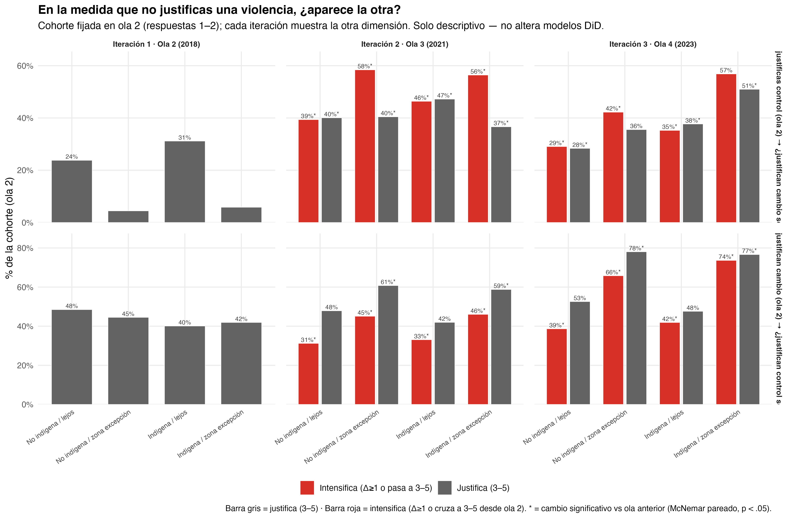
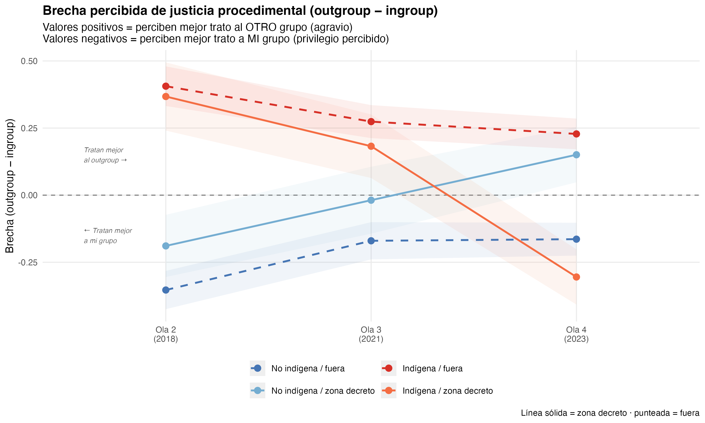
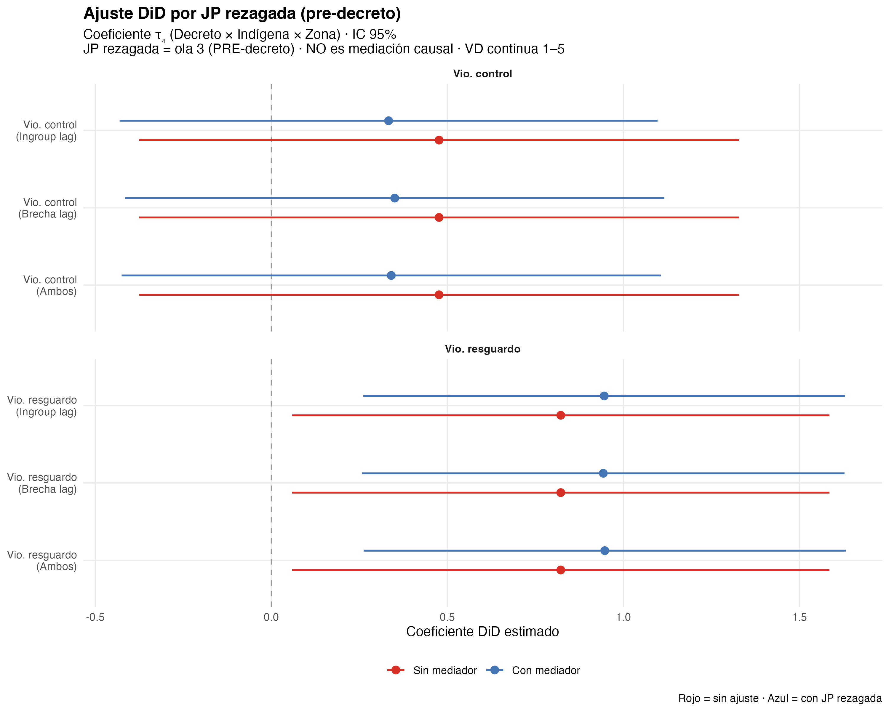

Apertura normativa y contención fallida: estallido social, estado de excepción y justificación de la violencia entre personas indígenas y no indígenas en Chile (2018–2023)
Resumen
Este artículo analiza, con el panel longitudinal ELRI (2018–2023), cómo el estallido social y el estado de excepción en la Macrozona Sur se asociaron con cambios en la justificación de la violencia entre personas indígenas y no indígenas en el sur de Chile. Estudiamos los efectos diferenciales del estallido (2019) y del estado de excepción prolongado (2021–2023) mediante un diseño de diferencias en diferencias. El estallido elevó la justificación de la violencia de cambio social para toda la muestra (β = 0,283, p = ,002), sin efecto diferencial por territorio ni identidad étnica — confirmando su carácter de fenómeno nacional. El decreto produjo un efecto diferencial significativo entre personas indígenas residentes en la zona de excepción: mayor justificación de la resistencia colectiva (β = 0,822, p = ,035). Para la represión estatal, el efecto directo no alcanza significancia en el Modelo C (β = 0,476, p = ,274); el decreto sí mejoró la JP ingroup (β = 0,745, p = ,035), evidencia de regularización procedimental. Un ajuste por JP pre-decreto atenúa τ₄ sobre control (~30%) y amplifica τ₄ sobre resistencia (~15%), sin identificar mediación causal. La coerción institucionalizada no produjo un backlash unidireccional sino una reconfiguración normativa dual.
1 Introducción
El conflicto entre el Estado chileno y el pueblo mapuche tiene raíces históricas profundas que se remontan a la ocupación militar de la Araucanía a fines del siglo XIX y a un proceso sostenido de usurpación territorial (Bengoa, 2002). Desde mediados de los 2000, este conflicto se ha intensificado: la militarización de la Macrozona Sur, los enfrentamientos entre comunidades indígenas y fuerzas policiales, y las diversas formas de resistencia territorial mapuche conforman un escenario de tensión crónica. Las desigualdades estructurales que subyacen a esta tensión — en acceso a tierra, reconocimiento político y condiciones socioeconómicas — han sido ampliamente documentadas (Richards, 2013), pero la relación entre las intervenciones coercitivas del Estado y las actitudes de la población civil hacia la violencia permanece como un vacío analítico relevante. ¿Cómo responden las personas — indígenas y no indígenas, cercanas y lejanas al conflicto — cuando el Estado institucionaliza la coerción en su territorio?
Esta pregunta adquirió una urgencia nueva entre 2018 y 2023, período en el que la población chilena experimentó una secuencia de shocks políticos con el potencial de alterar las actitudes hacia la violencia de formas contradictorias. El 18 de octubre de 2019 se iniciaron las protestas masivas conocidas como el estallido social (social outbreak), un ciclo de movilización que desbordó las demandas socioeconómicas iniciales para incorporar reivindicaciones históricas de los pueblos indígenas, el rechazo a la represión policial y un cuestionamiento generalizado a la legitimidad del orden institucional. En este proceso, la violencia se politizó como recurso de transformación social: actos que antes se consideraban inaceptables — barricadas, enfrentamientos con la policía, destrucción de infraestructura — adquirieron un grado de legitimidad discursiva sin precedentes en la historia reciente del país. Esta apertura normativa no fue exclusiva del conflicto mapuche ni de un territorio particular; fue un fenómeno nacional que reconfiguró los límites de lo que amplios segmentos de la población consideraban justificable.
La respuesta institucional al estallido abrió, inicialmente, un canal de transformación política. En octubre de 2020, el plebiscito por una nueva constitución resultó ganador con un 78% de apoyo. En 2021, la elección de la Convención Constitucional incluyó, por primera vez, escaños reservados para pueblos indígenas, otorgando representación institucional a demandas históricamente excluidas del debate constitucional. Sin embargo, la violencia en las zonas con mayor concentración de población indígena no cesó. Los ataques incendiarios, las tomas de terreno y los enfrentamientos con fuerzas policiales continuaron y, en algunos casos, se intensificaron durante 2021, generando una presión política que derivó en una respuesta coercitiva directa: el 12 de octubre de 2021, el gobierno decretó el estado de excepción constitucional de emergencia para la Macrozona Sur, institucionalizando la presencia militar en las 53 comunas de las provincias de Cautín y Malleco (La Araucanía) y Arauco y Biobío (región del Biobío). A diferencia de la represión puntual y reactiva del estallido social, este decreto constituyó un dispositivo de coerción institucionalizada: presencia militar permanente, con protocolos de operación formales y una duración que, con sucesivas prórrogas, se extiende hasta el presente.
El cierre del ciclo político completó la secuencia. En septiembre de 2022, el plebiscito de salida rechazó la propuesta de nueva constitución con un 62% de los votos, cerrando el canal institucional de cambio que el estallido había abierto. La población de la zona de conflicto quedó, así, en una doble clausura: la coerción sostenida del estado de excepción por un lado, y la falta de alternativas institucionales de transformación por otro. Esta configuración — coerción institucionalizada más clausura del canal institucional — define el contexto en el que se levantó la ola 4 de ELRI en 2023 y constituye el escenario natural del presente estudio.
Estudios previos han comenzado a explorar los efectos actitudinales de la represión policial en Chile. En el contexto específico del conflicto mapuche, Gerber et al. (2018) establecieron mediante un diseño transversal con población indígena mapuche que la percepción de justicia procedimental hacia Carabineros predice la legitimidad institucional atribuida a la policía y, a través de ella, tanto la aceptación de la violencia policial de orden como la justificación de la violencia colectiva de resistencia. En población general durante el estallido, Disi Pavlic (2024) mostraron, utilizando el panel ELSOC y un diseño de diferencias en diferencias doblemente robusto, que la exposición directa a protestas con represión policial activa aumentó la justificación de violencia contra la policía. Sin embargo, el estado actual del conocimiento presenta tres limitaciones críticas que este artículo busca resolver simultáneamente.
Primero, permanece inexplorado si los efectos documentados por Gerber et al. (2018) y Disi Pavlic (2024) son homogéneos entre grupos étnicos — particularmente entre indígenas y no indígenas, cuyas experiencias históricas y contemporáneas con la coerción estatal son estructuralmente distintas. Segundo, no se sabe si estos efectos persisten o se transforman cuando la represión se institucionaliza en un territorio específico mediante un decreto de estado de excepción por un período prolongado, ni cómo esa institucionalización cambia el cálculo de legitimidad. Tercero, aunque Gerber et al. (2018) identificaron justicia procedimental como mecanismo crucial, su enfoque transversal no permitió ordenar temporalmente el shock de represión, el cambio en la percepción de procedimiento y la actitud hacia la violencia — una limitación que un diseño longitudinal con mediadores rezagados puede resolver.
La pregunta de investigación que guía este artículo es: ¿en qué medida el estallido social y el período del estado de excepción se asocian con cambios diferenciales en la justificación de la violencia entre personas indígenas y no indígenas, según su cercanía territorial al conflicto, y cómo media la percepción de justicia procedimental en este proceso?
El presente artículo aborda esta pregunta desde tres ejes conceptuales que se articulan en el diseño empírico: la identidad social como estructuradora de la evaluación de la violencia, la justicia procedimental como mecanismo de mediación entre coerción y actitudes, y la cercanía territorial al conflicto como condición de exposición diferencial al tratamiento. El argumento empírico se organiza en tres bloques secuenciales: (1) la replicación del estallido como apertura normativa nacional; (2) la reconfiguración actitudinal dual del estado de excepción prolongado entre personas indígenas en zona de excepción —contención fallida con efectos asimétricos sobre resistencia y represión—; y (3) el mecanismo de regularización procedimental (Paso 1) y el ajuste exploratorio por JP pre-decreto, que aclaran por qué la coerción puede mejorar la percepción institucional sin contener la resistencia.
El artículo se organiza así: Sección 2 presenta el marco teórico; Sección 3 y Sección 4 describen el panel ELRI y la estrategia cuasi-experimental; Sección 5 desarrolla los tres bloques empíricos (estallido, decreto, mecanismo) y un resumen de robustez; el detalle técnico (balance, PSM, IPW, sensibilidad, heterogeneidad, plebiscito) figura en el Apéndice (Sección 9); Sección 6, Sección 7 y Sección 8 cierran el manuscrito.
2 Marco teórico
2.1 Identidad social y conflicto intergrupal
La Teoría de Identidad Social (SIT) postula que los individuos derivan parte de su autoconcepto de su pertenencia a grupos sociales, generando favoritismo endogrupal y discriminación exogrupal (Brewer, 2001; Tajfel & Turner, 1979, 1986). En contextos de conflicto activo, la saliencia identitaria aumenta y los juicios sobre la legitimidad de la violencia tienden a polarizarse según membresía grupal (Reicher, 2004).
H1 (Simetría identitaria). Las personas indígenas justificarán más la violencia de cambio social y menos la de control social que las no indígenas, independientemente de la zona. id_causa e id_chile operarán como predictores espejo.
2.2 Apertura normativa: el estallido como expansión del repertorio
La literatura sobre ciclos de protesta describe fases de ascenso, pico y declive en la movilización colectiva (Tarrow, 1994). El estallido social de octubre de 2019 constituye el pico del ciclo chileno reciente: una ruptura del consenso sobre los límites de la acción política que expandió los repertorios de contención y normalizó discursivamente la violencia como herramienta de transformación social. Esta apertura normativa no fue específica del conflicto mapuche ni de un territorio particular — fue un fenómeno nacional que afectó las actitudes de la población en general.
La represión policial durante el estallido produjo, además, efectos documentados sobre la legitimidad institucional en población general (Disi Pavlic, 2024), en contraste con el patrón identificado entre mapuche por Gerber et al. (2018), donde la justicia procedimental condiciona la legitimación de la violencia en ambos polos del conflicto. La represión puntual y reactiva del estallido se asocia con reacciones actitudinales contrarias a la coerción en la literatura clásica (Francisco, 2004); la coerción institucionalizada prolongada es el escenario que este artículo abre empíricamente.
H2 (Apertura normativa). La justificación de violencia de cambio social subirá entre la ola 2 (2018, pre-estallido) y la ola 3 (2021, resabio del estallido) para la muestra en conjunto, como efecto general de la apertura normativa. Este efecto no será diferencial por identidad étnica ni zona.
2.3 Contención fallida: coerción institucionalizada y desgaste del ciclo
La respuesta estatal al ciclo de conflicto adoptó dos formas simultáneas: la coerción institucionalizada (decreto del estado de excepción en octubre de 2021, con presencia militar prolongada en 53 comunas) y la canalización institucional (proceso constituyente 2020–2022). La derrota del Apruebo en septiembre de 2022 cerró la segunda vía, dejando la primera como el vínculo dominante entre Estado y territorio.
La literatura sobre represión y actitudes ofrece dos predicciones contrarias. La hipótesis de disuasión sostiene que la coerción sostenida normaliza el uso de la fuerza como recurso legítimo y reduce la disposición a justificar la resistencia (Davenport, 2007; Moore, 1998). La hipótesis de reacción contraria a la represión sostiene que la coerción radicaliza a la población afectada, aumentando la justificación de la violencia contra el Estado (Blattman, 2009; Francisco, 2004). Lo que distingue al estado de excepción de la represión puntual del estallido es su carácter institucionalizado y prolongado: no es una reacción policial a una protesta específica, sino un dispositivo legal que militariza un territorio de forma sostenida.
H3 (Contención fallida diferencial).
(a) Para la muestra en conjunto, la justificación de violencia de cambio social bajará entre la ola 3 y la ola 4, compatible con el agotamiento del ciclo y la derrota del Apruebo.
(b) Para las personas indígenas en zona de excepción, el efecto será inverso: la justificación de violencia de cambio social aumentará o se mantendrá, indicando que el decreto no logró contener la apertura normativa del estallido entre quienes viven la coerción directamente.
(c) La justificación de violencia de control social aumentará en zona de excepción entre personas indígenas (sedimentación coercitiva).
2.4 Reconfiguración normativa dual: mecanismos simultáneos
La coerción prolongada e institucionalizada puede alterar actitudes por dos vías simultáneas: un efecto directo de la exposición a la represión y un efecto indirecto vía la percepción de justicia procedimental hacia el propio grupo (ingroup). La regularización del trato institucional — predecibilidad, no benevolencia — puede legitimar la represión estatal sin suprimir la resistencia territorial. Figura 1 resume este modelo conceptual (esquema teórico; no SEM ni mediación causal identificada).
H5 (Contención fallida y canal procedimental). En la ola 4, las personas indígenas en zona de excepción aumentarán la justificación de la violencia de cambio social respecto a los demás grupos (efecto directo de la coerción institucionalizada). El decreto mejorará la justicia procedimental ingroup y esa mejora mediará parcialmente el efecto sobre la represión estatal, pero suprimirá parte del efecto observado sobre la resistencia.
2.5 Justicia procedimental como mecanismo: ingroup vs. outgroup
Tyler (1990) y Tyler y Huo (2002) sostienen que la percepción de trato justo por instituciones predice legitimidad y cumplimiento normativo. En el conflicto mapuche, Gerber et al. (2018) demostraron que ese canal opera en ambas direcciones de la violencia justificada (control social y resistencia), mediado por la legitimidad policial. Este artículo extiende esa lógica al diseño longitudinal y desagrega el trato percibido en dimensiones ingroup y outgroup. Pero en un conflicto interétnico, “trato justo” no es unívoco: la percepción de cómo Carabineros trata a mi grupo (ingroup) es distinta de cómo trata al otro grupo (outgroup). ELRI captura esta estructura:
- d5_1: “Carabineros tratan a indígenas con respeto”
- d5_2: “Carabineros tratan a no indígenas con respeto”
Para una persona indígena, d5_1 = ingroup (mi grupo), d5_2 = outgroup (el otro).
Para una persona no indígena, d5_1 = outgroup, d5_2 = ingroup.
Baseline (ola 2) confirma la estructura teórica: indígenas perciben brecha = 0,40 (agravio: tratan mejor al outgroup); no indígenas perciben brecha = -0,32 (privilegio: tratan mejor a mi grupo).
H4 (Mecanismo de justicia procedimental).
(a) El estado de excepción modificará la percepción de justicia procedimental ingroup entre personas indígenas en zona de excepción. La dirección del efecto no se predetermina teóricamente: puede ser deterioro (Davenport) o regularización (Tyler).
(b) Si just_proc_ingroup cambia, mediará parcialmente el efecto del decreto sobre la justificación de violencia de control social (atenuación del coeficiente DiD al incluir el mediador rezagado).
(c) El mecanismo operará asimétricamente: mediación para violencia de control (la legitimidad procedimental facilita la aquiescencia con la coerción) y supresión para violencia de cambio social (la resistencia responde al efecto directo de la coerción, no al canal procedimental).
3 Diseño y datos
3.1 La Encuesta Longitudinal de Relaciones Interculturales (ELRI)
La ELRI es un panel probabilístico con diseño espejo que entrevista paralelamente a muestras de población indígena y no indígena en Chile.
Se utilizan las olas 2 (2018), 3 (dic 2020–may 2021) y 4 (2023) en el análisis principal. El panel exige observación en las cuatro olas ELRI (2016–2023) para el criterio de balance; la ola 1 (2016) se usa solo en el placebo pretratamiento. La muestra analítica incluye 845 personas que se autoidentifican como pertenecientes a algún pueblo originario (a1 ∈ 1–11) y 735 personas no indígenas (a1 = 12) en baseline (ola 2). La pertenencia étnica se construye a partir de la autoidentificación en ola 1 y se mantiene fija a lo largo del panel para evitar endogeneidad. El panel balanceado comprende 1.580 individuos presentes en las tres olas analíticas (4.740 persona-olas).
| Ola | Campo | Contexto histórico | Rol analítico |
|---|---|---|---|
| 1 | 2016 | Conflicto latente | Solo placebo |
| 2 | 2018 | Pre-estallido, pre-excepción | Baseline (t = 0) |
| 3 | Dic 2020 – May 2021 | Resabio estallido + pandemia | Tratamiento 1 (t = 1) |
| 4 | 2023 | Decreto prolongado + derrota Apruebo | Tratamiento 2 (t = 2) |
Nota crítica sobre el timeline: El decreto D.S. N°418/2021 fue firmado el 12 de octubre de 2021, cinco meses después del cierre del campo de la ola 3. La ola 3 captura el resabio del estallido social de octubre de 2019, no el estado de excepción. El análisis DiD compara: (1) ola 2→3 (transición estallido, sin decreto); (2) ola 3→4 (transición decreto + Apruebo); (3) olas 2–4 completas (modelo principal).
3.2 Estrategia de identificación cuasi-experimental
El diseño explota dos fuentes de variación temporal: (1) el estallido social de 2019 como shock nacional no diferencial, capturado entre olas 2 y 3; y (2) el decreto del estado de excepción como shock territorial diferencial, capturado entre olas 3 y 4. La combinación permite estimar tres modelos DiD: Modelo A (transición estallido, olas 2–3), Modelo B (transición decreto, olas 3–4) y Modelo C (tres períodos completos, modelo principal del paper).
El estado de excepción fue declarado el 12 de octubre de 2021 en 53 comunas de las cuatro provincias completas incluidas en el decreto D.S. N°418/2021: Cautín y Malleco (La Araucanía), Arauco y Biobío (región del Biobío). Esta asignación territorial exógena permite construir una estrategia de diferencias-en-diferencias con cuatro grupos de comparación (identidad × zona).
| Grupo | Zona | Período tratamiento |
|---|---|---|
| Indígena / cerca | Excepción | Tratados |
| Indígena / lejos | Sin excepción | Control |
| No indígena / cerca | Excepción | Tratados |
| No indígena / lejos | Sin excepción | Control |
El supuesto de tendencias paralelas no es testeable formalmente con una sola ola pre-tratamiento (ola 2). Por esta razón, los resultados se interpretan como cambios diferenciales compatibles con una lógica de diferencias-en-diferencias extendida, pero no como estimaciones causales definitivas. Este análisis se presenta como evidencia cuasi-experimental exploratoria: los hallazgos son compatibles con una interpretación de cambio diferencial posterior al estado de excepción, aunque no concluyente causalmente. En la ola 2, las diferencias por zona de excepción van en dirección opuesta a los patrones post-tratamiento observados (β = -0,354, p = ,082 para cambio social), lo que es consistente —aunque no establece— con la plausibilidad del contrafactual.
Nuestra estrategia se inspira en diseños que explotan la coincidencia entre un evento político y el trabajo de campo de una encuesta (Legewie, 2013). A diferencia de ese diseño —donde el evento ocurre durante una misma ola—, nuestros shocks ocurren entre olas separadas temporalmente. El coeficiente DiD de la ola 4 no identifica el decreto en forma aislada: agrega la coerción institucionalizada prolongada, la derrota del plebiscito de salida (septiembre de 2022) y la frustración asociada al cierre del canal constituyente, además de la evolución del conflicto territorial entre 2021 y 2023. El diseño DiD atenúa, pero no elimina, esta ambigüedad de atribución (Sección 7).
3.3 Variables
La operacionalización detallada de ítems, escalas y fuentes modulares figura en el Apéndice A1 (Tabla 7). En todo el manuscrito se emplean dos variables dependientes principales, en la línea de la escala de apoyo a la violencia en conflicto intergrupal (SVIC) de Gerber et al. (2018), adaptada localmente en ELRI. La justificación de la represión estatal (idx_vio_control) se midió con un único ítem: «¿Cuán justificado le parece que Carabineros reprima con mayor fuerza las tomas de terreno y protestas?» (d3_1, escala 1–5). Se excluyó un segundo ítem sobre el uso de armas por agricultores (d3_2) porque opera por un mecanismo distinto — defensa privada de propiedad versus legitimidad institucional — y no responde simétricamente al diseño espejo. La justificación de la violencia de cambio social (idx_vio_resguardo) se operacionalizó mediante el promedio de dos ítems: tomas de terreno (d4_2) y corte de rutas (d4_3) (α = 0,746). Ambas escalas van de 1 (nada justificado) a 5 (totalmente justificado).
Los índices compuestos de dos ítems (violencia de cambio social; identidad étnica, r ≈ 0,82) muestran consistencia interna adecuada. La justificación de violencia de cambio social presenta α = 0,746 (r = 0,602 entre d4_2 y d4_3). Los ítems únicos — represión estatal (d3_1), justicia procedimental ingroup y outgroup — no requieren estimación de consistencia interna (Tabla 15).
La variable de asignación espacial al tratamiento (cerca_conflicto o zona_excepcion) identifica a los individuos residentes en las 53 comunas afectadas por el decreto D.S. N°418/2021. Sin embargo, dado que el estado de excepción fue decretado en octubre de 2021 —cinco meses después del término del campo de ola 3 (mayo 2021)—, el período de exposición efectiva al tratamiento corresponde a la ola 4 (2023), cuando el régimen de excepción ya llevaba dos años de implementación continua. La pertenencia étnica se operacionaliza mediante una variable dicotómica construida a partir de la autoidentificación en ola 1 (a1): indígena (a1 ∈ 1–11) versus no indígena (a1 = 12). Esta clasificación es fija a lo largo del panel para evitar endogeneidad entre la variable de grupo y las variables dependientes.
En la especificación DiD, el efecto causal de interés se estima mediante la triple interacción ola 4 × indígena × zona de excepción (τ₄):
\[ \tau_4 = \beta(\text{Ola}_4 \times \text{Indígena} \times \text{Zona excepción}) \]
que captura el cambio diferencial en actitudes entre grupos expuestos y no expuestos al decreto prolongado, controlando por tendencias temporales generales (efectos de período) y diferencias preexistentes entre zonas. Los controles incluyen identificación con Chile (a6), identificación con la causa indígena (d6_1), percepción de desigualdad (c22 invertida), malestar por diferencias (c24), apoyo a movilizaciones (c25), sexo, edad y zona urbano/rural. La percepción de injusticia (c23) se excluye de los modelos principales por missingness elevado (~46% por ola). La zona urbano/rural se incluye condicionalmente según su correlación con cerca_conflicto (umbral |r| ≤ 0,5; en estos datos r = 0,35, por lo que se incluye).
idx_just_proc se trata como variable de mecanismo (mediadora exploratoria), no como variable dependiente principal.
3.4 Estrategia analítica
Se estiman modelos multinivel con intercepto aleatorio por individuo (folio) como especificación titular. El coeficiente de interés es la triple interacción Ola 4 × indígena × zona de excepción (\(\tau_4\)). El mecanismo descompone JP ingroup/outgroup (Paso 1 post-decreto; Paso 3 = ajuste por JP pre-decreto). Robustez: balance, PSM con caliper, IPW con feols + SE cluster comunal, FE individuales, DRDID (submuestra indígena), placebo (Sección 9.4–A5) y sensibilidad (Sección 9.7); plebiscito 2022 en Sección 9.12 (asociacional).
4 Modelo estadístico
4.1 Especificación principal: DiD en tres períodos
Las observaciones están anidadas en individuos (N = 1.580) a través del tiempo. Estimamos un modelo lineal mixto multinivel con intercepto aleatorio por folio (u_i) y errores independientes entre individuos. La categoría de referencia combina personas no indígenas, residentes fuera de la zona de excepción, en la ola 2 (2018, pre-estallido). El vector \(\mathbf{X}_{it}\) incluye sexo, edad, zona urbano/rural (condicional), identificación con Chile y con la causa indígena, percepción de desigualdad, malestar por diferencias y apoyo a movilizaciones.
El coeficiente de interés es la triple interacción Ola 4 × indígena × zona de excepción (\(\tau_{\text{dec}}\)), que captura el cambio diferencial del período de coerción institucionalizada. La interacción análoga para la ola 3 (\(\tau_{\text{est}}\)) identifica el efecto diferencial del resabio del estallido. La especificación principal (Modelo C) es:
\[ \begin{aligned} Y_{it} = \beta_0 &+ \beta_1 \text{Ola3}_{it} + \beta_2 \text{Ola4}_{it} + \beta_3 \text{Indi}_i + \beta_4 \text{Zona}_i \\ &+ \sum_{t \in \{3,4\}} \Big[ \delta_t (\text{Ola}_t \times \text{Zona}_i) + \theta_t (\text{Ola}_t \times \text{Indi}_i) + \tau_t (\text{Ola}_t \times \text{Indi}_i \times \text{Zona}_i) \Big] \\ &+ \mathbf{X}_{it}'\boldsymbol{\gamma} + u_i + \varepsilon_{it} \end{aligned} \tag{1}\]
donde \(Y_{it}\) es la justificación de represión estatal o de cambio social, \(\text{Indi}_i\) e \(\text{Zona}_i\) codifican pertenencia indígena y residencia en comunas del decreto, y \(u_i \sim N(0,\sigma_u^2)\), \(\varepsilon_{it} \sim N(0,\sigma^2)\). La estimación usa máxima verosimilitud restringida (REML) en lme4; reportamos coeficientes fijos e intervalos de confianza al 95 %. Las especificaciones alternativas (Modelos A y B, una transición cada uno) y las fórmulas completas figuran en el Apéndice (Tabla 18, Sección 9.14).
4.2 Estrategia de identificación
El diseño asume tendencias paralelas condicionales en covariables observadas, ausencia de interferencia entre unidades (SUTVA) y ausencia de selección muestral endógena al panel balanceado. Con una sola ola estrictamente pre-tratamiento (ola 2), el supuesto de tendencias paralelas no es testeable de forma definitiva; los resultados se interpretan como evidencia cuasi-experimental exploratoria. El placebo en olas 1–2 (Apéndice A5) y el balance pretratamiento (A2) apoyan la plausibilidad del contrafactual.
4.3 Análisis de mecanismo
El análisis de mecanismo tiene dos piezas. Paso 1: el DiD del decreto sobre justicia procedimental ingroup/outgroup en ola 4 (mediador post-tratamiento). Paso 3 (ajuste exploratorio): se compara \(\tau_4\) con y sin \(J_{i,t-1}\) (JP en ola 3, pre-decreto). Este segundo paso es un ajuste por baseline procedimental, no mediación causal del decreto: el lag pre-tratamiento no puede transmitir el path decreto→M→Y. Un análisis exploratorio con mediador contemporáneo (ola 4) figura en el Apéndice. No estimamos ecuaciones estructurales; el detalle figura en A11.3.
4.4 Software y reproducibilidad
Los modelos se estiman en R 4.x (lme4, lmerTest, marginaleffects, MatchIt, WeightIt). Los scripts 01_limpieza.R–09_diagramas.R regeneran data/*.rds y output/. El ICC oscila entre 0,12 y 0,20; el LRT M1 vs. M2 favorece la especificación DiD (\(\chi^2_{(5)} > 24\), p < .001).
5 Resultados
5.1 Estadísticos descriptivos
Tabla 2 presenta las características sociodemográficas en la ola 2 (baseline). Tabla 3 resume la distribución de variables dependientes e independientes clave por período e identidad étnica.
| Variable | Overall N = 1,5801 |
Identidad étnica
|
p-value2 | |
|---|---|---|---|---|
| no_indi N = 7351 |
indi N = 8451 |
|||
| Sexo (mujer) | 0.7 | |||
| hombre | 467 (30%) | 221 (30%) | 246 (29%) | |
| mujer | 1,113 (70%) | 514 (70%) | 599 (71%) | |
| Grupo etario | 0.003 | |||
| 18_24 | 102 (6.5%) | 42 (5.7%) | 60 (7.1%) | |
| 25_34 | 242 (15%) | 93 (13%) | 149 (18%) | |
| 35_44 | 240 (15%) | 99 (13%) | 141 (17%) | |
| 45_54 | 325 (21%) | 153 (21%) | 172 (20%) | |
| 55_64 | 347 (22%) | 179 (24%) | 168 (20%) | |
| 65+ | 323 (20%) | 168 (23%) | 155 (18%) | |
| Zona (rural) | 0.12 | |||
| 1 | 1,219 (77%) | 580 (79%) | 639 (76%) | |
| 2 | 361 (23%) | 155 (21%) | 206 (24%) | |
| Zona de excepción | 0.9 | |||
| lejos | 1,224 (77%) | 568 (77%) | 656 (78%) | |
| cerca | 356 (23%) | 167 (23%) | 189 (22%) | |
| Identificación con Chile | <0.001 | |||
| 1 | 14 (0.9%) | 8 (1.1%) | 6 (0.7%) | |
| 2 | 50 (3.2%) | 21 (2.9%) | 29 (3.4%) | |
| 3 | 109 (6.9%) | 42 (5.7%) | 67 (7.9%) | |
| 4 | 478 (30%) | 184 (25%) | 294 (35%) | |
| 5 | 927 (59%) | 479 (65%) | 448 (53%) | |
| Identificación con la causa indígena | <0.001 | |||
| 1 | 141 (9.0%) | 97 (13%) | 44 (5.3%) | |
| 2 | 200 (13%) | 134 (18%) | 66 (7.9%) | |
| 3 | 317 (20%) | 175 (24%) | 142 (17%) | |
| 4 | 662 (42%) | 252 (35%) | 410 (49%) | |
| 5 | 242 (15%) | 68 (9.4%) | 174 (21%) | |
| 1 n (%) | ||||
| 2 Pearson’s Chi-squared test | ||||
| variable | M | SD |
|---|---|---|
| pre - no_indi | ||
| Represión estatal (status quo) | 2.30 | 1.26 |
| Cambio social | 1.72 | 1.00 |
| Perc. desigualdad | 3.04 | 0.78 |
| Apoyo movilizaciones | 2.35 | 1.27 |
| Identificación con Chile | 4.51 | 0.82 |
| Identificación con la causa indígena | 3.08 | 1.20 |
| pre - indi | ||
| Represión estatal (status quo) | 2.14 | 1.22 |
| Cambio social | 1.93 | 1.14 |
| Perc. desigualdad | 3.13 | 0.73 |
| Apoyo movilizaciones | 2.80 | 1.37 |
| Identificación con Chile | 4.36 | 0.83 |
| Identificación con la causa indígena | 3.72 | 1.04 |
| estallido - no_indi | ||
| Represión estatal (status quo) | 2.31 | 1.32 |
| Cambio social | 2.23 | 1.17 |
| Perc. desigualdad | 3.27 | 0.81 |
| Apoyo movilizaciones | 2.57 | 1.34 |
| Identificación con Chile | 4.25 | 0.98 |
| Identificación con la causa indígena | 3.38 | 1.02 |
| estallido - indi | ||
| Represión estatal (status quo) | 2.19 | 1.32 |
| Cambio social | 2.47 | 1.15 |
| Perc. desigualdad | 3.28 | 0.74 |
| Apoyo movilizaciones | 2.93 | 1.33 |
| Identificación con Chile | 4.17 | 0.91 |
| Identificación con la causa indígena | 3.86 | 0.83 |
| decreto - no_indi | ||
| Represión estatal (status quo) | 2.67 | 1.42 |
| Cambio social | 1.91 | 1.20 |
| Perc. desigualdad | 3.18 | 0.77 |
| Apoyo movilizaciones | 2.42 | 1.25 |
| Identificación con Chile | 4.43 | 0.85 |
| Identificación con la causa indígena | 3.12 | 1.25 |
| decreto - indi | ||
| Represión estatal (status quo) | 2.57 | 1.47 |
| Cambio social | 2.23 | 1.25 |
| Perc. desigualdad | 3.18 | 0.78 |
| Apoyo movilizaciones | 2.78 | 1.27 |
| Identificación con Chile | 4.20 | 0.86 |
| Identificación con la causa indígena | 3.89 | 0.98 |
Nota. La justificación de represión estatal (d3_1) fue medida como ítem único; el segundo ítem del módulo (uso de armas por agricultores, d3_2) se excluyó por razones conceptuales (véase Sección 3.3).
En baseline (ola 2), la estructura ingroup/outgroup de justicia procedimental muestra el patrón esperado teóricamente: los indígenas perciben mejor trato al outgroup que al ingroup (brecha = 0,40), indicando agravio percibido, mientras que los no indígenas perciben mejor trato a su propio grupo (brecha = -0,32), indicando privilegio percibido. La estructura identitaria revela un hallazgo inesperado: los indígenas de la muestra presentan identidad dual con leve predominancia de identidad nacional sobre étnica (brecha identitaria = -0,34), lo que es consistente con la presión asimilacionista histórica documentada por Bengoa (2002) y contradice la asunción de identidades étnicas excluyentes.
Un patrón relevante emerge en baseline (ola 2): los indígenas residentes en la zona de excepción muestran menor justificación de la violencia de cambio social que los indígenas fuera de ella (media = 1,36 vs. 2,10). Esta divergencia inicial en dirección opuesta al efecto observado en ola 4 es compatible con el supuesto de tendencias paralelas — si el grupo tratado ya hubiera sido sistemáticamente más proclive a la resistencia antes del decreto, el DiD estaría sobreestimando el efecto; lo que observamos es lo contrario.
5.2 Trayectorias descriptivas y divergencia temporal
Figura 2 muestra la proporción de encuestados que justifica la violencia (respuestas 3–5 en escala 1–5), por identidad étnica y zona de excepción. Los modelos DiD y de mecanismo usan las VD en escala continua 1–5 (idx_vio_control, idx_vio_resguardo); esta figura es solo lectura descriptiva.
En cambio social, la proporción que justifica sube entre la ola 2 y la ola 3 en todos los grupos, compatible con la apertura normativa del estallido (H2), y baja en la ola 4 en la muestra agregada; entre personas indígenas en zona de excepción la disminución es menor, anticipando el hallazgo central del DiD del decreto. En control social, el perfil es distinto: relativamente estable entre olas 2 y 3 y mayor presión al alza en la ola 4, especialmente entre indígenas en zona de excepción. En baseline (ola 2), la zona de excepción exhibe menor justificación de violencia de cambio social (β = -0,354, p = ,082) que fuera de ella — patrón opuesto a los efectos post-tratamiento, consistente con tendencias paralelas plausibles.

Figura 3 resume, en una cuadrícula facetada por iteración (olas 2–4), la idea descriptiva de que quienes en ola 2 no justifican una dimensión (1–2) pueden mostrar después mayor justificación en la otra: filas = «no justificas control → ¿justifican cambio?» y el recorrido inverso; columnas = cada ola de medición. Barras grises: % que justifica (3–5); barras rojas: % que intensifica (Δ≥1 o cruza a 3–5 desde ola 2). Un asterisco () en la etiqueta indica cambio significativo respecto a la ola anterior (McNemar pareado, p* < .05). Solo descriptivo.

5.3 Bloque 1 — Replicación del estallido
Antes de analizar el efecto del estado de excepción, verificamos que los datos reproduzcan el patrón ya documentado para el estallido social. El período post-estallido (ola 3) se asocia con un aumento general de la justificación de la violencia de cambio social (β = 0,283, p = ,002), consistente con la literatura sobre expansión del repertorio de contención (González, 2020; Somma et al., 2021). Crucialmente, este aumento no es diferencial por territorio ni identidad: la triple interacción DiD del estallido no alcanza significancia para represión estatal (β = 0,063, p = ,865) ni para cambio social (β = -0,090, p = ,786). El estallido operó como fenómeno nacional, no territorializado — un punto de partida común contra el cual medimos el segundo shock.
5.4 Bloque 2 — Reconfiguración normativa dual bajo el decreto
El decreto se asocia con un aumento significativo y diferencial en la justificación de la violencia de cambio social entre personas indígenas en zona de excepción (β = 0,822, p = ,035). Para la justificación de la represión estatal (d3_1, ítem único), el coeficiente de la triple interacción es positivo pero no alcanza significancia estadística en la especificación principal (β = 0,476, p = ,274); sin embargo, como se muestra en Sección 5.5, el decreto sí afecta la represión estatal por una vía indirecta — la regularización procedimental percibida — capturada en el análisis de mecanismo.
El efecto sobre cambio social es robusto a especificaciones alternativas: el modelo que restringe la comparación a las olas 3–4 arroja un coeficiente similar (β = 0,864, p = ,013, Modelo B). Este patrón ocurre contra la tendencia agregada: la justificación de cambio social baja entre olas 3 y 4 en la muestra en conjunto (β = -0,209, p = ,025), pero no entre quienes viven la coerción directamente. La institucionalización de la coerción no contuvo la justificación de la resistencia; la profundizó entre quienes la experimentan de manera directa y sostenida — un patrón de contención fallida que, como se muestra en Sección 5.5, coexiste con legitimación parcial de la institución policial por vía procedimental. El análisis de robustez completo figura en Sección 5.6.
El efecto del decreto opera principalmente por proximidad territorial y no por intensidad de la identidad étnica en baseline: los análisis de heterogeneidad por terciles de predominancia identitaria no muestran una modulación lineal del DiD (detalle en Sección 9.8). Los controles sustantivos confirman la simetría identitaria predicha por H1: la identificación con la causa indígena predice positivamente el cambio social y negativamente la represión estatal; la identificación con Chile opera como espejo inverso.
La comparación LRT (M1 vs. M21) indica que la especificación DiD mejora el ajuste (\(\chi^2_{(5)} > 24\), p < .001). Los coeficientes completos figuran en Tabla 4 y en la tabla complementaria de Modelos A, B y C (Tabla 18).
Figura 4 muestra medias predichas del modelo M2 para los cuatro grupos en los tres períodos, destacando la divergencia ola 3 → ola 4.

| Control social (status quo) | Cambio social | |
|---|---|---|
| Intercepto | 3.626*** | 1.256*** |
| (0.274) | (0.245) | |
| Ola 3 — Resabio estallido | 0.127 | 0.283** |
| (0.101) | (0.092) | |
| Ola 4 — Decreto + Apruebo | 0.316** | 0.050 |
| (0.115) | (0.103) | |
| Indígena | 0.019 | 0.056 |
| (0.109) | (0.098) | |
| Zona excepción | -0.154 | -0.354+ |
| (0.230) | (0.204) | |
| malestar_diferen | -0.023 | 0.087*** |
| (0.026) | (0.023) | |
| apoyo_movil | -0.079*** | 0.132*** |
| (0.024) | (0.022) | |
| Ola 3 × Indígena | 0.028 | 0.024 |
| (0.139) | (0.126) | |
| Ola 4 × Indígena | 0.011 | -0.102 |
| (0.152) | (0.137) | |
| Ola 3 × Zona excepción | 0.310 | 0.464+ |
| (0.281) | (0.251) | |
| Ola 4 × Zona excepción | 0.687* | 0.292 |
| (0.334) | (0.298) | |
| Indígena × Zona excepción | 0.039 | -0.059 |
| (0.300) | (0.267) | |
| Ola 3 × Indígena × Zona [DiD estallido] | 0.063 | -0.090 |
| (0.369) | (0.331) | |
| Ola 4 × Indígena × Zona [DiD decreto] | 0.476 | 0.822* |
| (0.435) | (0.389) | |
| SD (Intercept folio) | 0.524 | 0.443 |
| SD (Observations) | 1.104 | 0.999 |
| Num.Obs. | 1844 | 1830 |
| ICC | 0.2 | 0.2 |
| RMSE | 1.01 | 0.92 |
| + p < 0.1, * p < 0.05, ** p < 0.01, *** p < 0.001 | ||
| Modelo C: tres períodos, ref. = ola 2 (2018). Coeficientes de interés: DiD estallido (ola 3) y DiD decreto (ola 4). N = 1844 por VD (listwise deletion en controles). | ||
5.5 Bloque 3 — Mecanismo: regularización y ajuste procedimental
El análisis usa la misma escala continua 1–5 que el Modelo C (idx_vio_control, idx_vio_resguardo). El Paso 1 estima el efecto del decreto sobre justicia procedimental en ola 4. El Paso 3 compara \(\tau_4\) con y sin JP rezagada (ola 3): es un ajuste por baseline procedimental pre-decreto, no mediación causal — el porcentaje de atenuación no identifica el path decreto→M→Y. Figura 5 resume el esquema; Figura 6 muestra las trayectorias ingroup/outgroup.

r fmt_beta_p(paper$b_T_M_ingroup, paper$p_T_M_ingroup)). Paso 3: ajuste por JP rezagada (pre-decreto); el Δβ (~r round(paper$med_ctrl_pct, 0)% / ~r round(paper$sup_resg_pct, 0)%) no identifica mediación causal. Exploratorio misma-ola en apéndice.
Figura 6 muestra las trayectorias por grupo étnico. El decreto se asoció con una mejora significativa en la percepción de justicia procedimental ingroup entre personas indígenas en zona de excepción (β = 0,745, p = ,035). Esto sugiere que la institucionalización del estado de excepción — la transición de enfrentamientos caóticos a control territorial predecible — regularizó las interacciones y mejoró la percepción de justicia procedimental ingroup (no por benevolencia, sino por estabilidad de reglas — Tyler, 1990).

Figura 7 muestra la brecha percibida (outgroup − ingroup). En ola 4, la brecha se redujo marginalmente para personas indígenas en zona de excepción (β = -0,528, p = ,091), consistente con la regularización del trato institucional.

Paso 1 — Tratamiento → mediadores (DiD DECRETO):
| Mediador | β | SE | p | Interpretación |
|---|---|---|---|---|
| Just. proc. ingroup | 0,745 | — | ,035 | Mejora percibida del trato al propio grupo |
| Just. proc. outgroup | 0,248 | — | ,484 | Sin efecto significativo |
| Brecha just. proc. | -0,528 | — | ,091 | Reducción marginal de la brecha |
Paso 3 — Ajuste por JP rezagada (pre-decreto; no mediación causal):
| VD | Covariable | β sin | β con | Δβ (%) | Lectura |
|---|---|---|---|---|---|
| Vio. control | Ingroup lag | 0,476 | 0,333 | 30% | Atenuación al ajustar |
| Vio. control | Brecha lag | 0,476 | 0,350 | 26% | Atenuación al ajustar |
| Vio. resguardo | Ingroup lag | 0,822 | 0,945 | -15% | Amplificación (supresión) |
| Vio. resguardo | Brecha lag | 0,822 | 0,943 | -15% | Amplificación (supresión) |
Nota. Misma VD continua que el Modelo C. El lag es JP en ola 3 (pre-decreto): el Δβ no identifica el efecto indirecto del decreto. La mediación exploratoria con mediador en ola 4 figura en el Apéndice.
Interpretación: El Paso 1 muestra que el decreto mejora la JP ingroup (β = 0,745, p = ,035). El Paso 3 indica que condicionar por JP pre-decreto atenúa τ₄ sobre control (~30%) y amplifica τ₄ sobre cambio social (~15%): patrones compatibles con un rol de la JP como covariable de baseline, no con mediación post-tratamiento identificada. El hallazgo titular permanece el efecto directo sobre la resistencia; la regularización procedimental (Paso 1) es evidencia separada de reconfiguración institucional.
Figura 8 compara visualmente los coeficientes \(\tau_4\) con y sin JP rezagada.

La tabla completa de modelos de mecanismo se presenta en Tabla 17.
5.6 Robustez (resumen)
Los hallazgos principales son robustos bajo múltiples especificaciones. El efecto del decreto sobre cambio social se mantiene positivo en la mayoría: IPW con trimming 5–95% y SE clusterizados por comuna (β = 0,639, p = ,089; β = 0,987, p = ,016); PSM con caliper (β = 0,717, p = ,122) muestra dirección consistente con menor potencia. Especificaciones adicionales — efectos fijos individuales (fixest), DiD doblemente robusto (DRDID) y DiD con cluster comunal — figuran en el Apéndice junto al placebo pretratamiento (β = -0,132, p = ,714; β = 0,160, p = ,598). La codificación ordinal (CLMM) se reporta como robustez de escala. El detalle completo figura en Sección 9.
6 Discusión
6.1 Apertura normativa y reconfiguración dual
Los resultados permiten distinguir dos momentos de un mismo proceso con efectos cualitativamente distintos. El estallido actuó como apertura normativa nacional: la justificación de la violencia de cambio social aumentó para toda la muestra (β = 0,283, p = ,002) sin diferencial territorial ni étnico, replicando con datos longitudinales lo que estudios transversales habían sugerido sobre la expansión del repertorio de contención (González, 2020; Somma et al., 2021). El diseño espejo confirma que este proceso no fue privativo de la población indígena. Investigación reciente en el contexto estadounidense muestra que eventos de violencia política de alta visibilidad pueden reconfigurar temporalmente las normas sobre la justificación de la violencia, con efectos diferenciales según la identidad grupal del respondente (Vargiu & Nai, 2026). Sin embargo, estos efectos son de corta duración y reactivos al ciclo mediático inmediato. El caso que estudiamos difiere cualitativamente: el decreto de estado de excepción no fue un evento puntual sino una presencia coercitiva sostenida durante más de dos años. Lo que observamos no es apertura normativa reactiva sino sedimentación coercitiva — un proceso por el cual la exposición prolongada a la coerción institucional reconfigura el marco normativo sobre el uso de la fuerza de manera más duradera.
El decreto produjo un patrón distinto. En el agregado, la justificación de cambio social cae entre olas 3 y 4 (β = -0,209, p = ,025, Modelo B con referencia en ola 3), compatible con el agotamiento del ciclo de protesta (Tarrow, 1994). Pero entre personas indígenas en zona de excepción esta tendencia se revierte: el coeficiente DiD es positivo, significativo y robusto a múltiples especificaciones (β = 0,822, p = ,035). La institucionalización de la coerción no contuvo la justificación de la resistencia: la profundizó.
Conviene precisar por qué el patrón observado no es reducible al concepto de backlash. Un backlash unidireccional produciría mayor justificación de la resistencia y menor aceptación de la represión. Los datos muestran algo distinto: el decreto produce un efecto directo significativo sobre la resistencia y, simultáneamente, legitimación parcial de la represión por vía procedimental. Llamamos a este patrón reconfiguración normativa dual: bajo coerción institucionalizada prolongada, la violencia como categoría se reclasifica como recurso potencialmente legítimo — en distintos sentidos y por mecanismos distintos — independientemente de quién la ejerce.
6.2 Regularización, no benevolencia: Tyler revisitado
El hallazgo más contraintuitivo es que el decreto se asoció con una mejora en la percepción de justicia procedimental ingroup entre personas indígenas en zona de excepción (β = 0,745, p = ,035). Esto contrasta con Disi Pavlic (2024), donde la represión puntual deterioró la justicia procedimental. La distinción es conceptualmente relevante: la represión durante el estallido fue reactiva y arbitraria; el decreto instaló una presencia policial estructurada, con protocolos formalizados y geográficamente delimitados. Retomando a Tyler (1990), las personas pueden distinguir entre el resultado de la interacción — desfavorable — y el procedimiento que lo produce. La predictibilidad es una forma de justicia procedimental, aun cuando el contenido sea coercitivo.
El Paso 1 confirma la regularización procedimental (Sección 5.5). El ajuste por JP pre-decreto (Paso 3) atenúa τ₄ sobre control (~30%) y amplifica τ₄ sobre resistencia (~15%), pero no identifica un path mediacional del decreto: el lag es anterior al tratamiento. La coexistencia de legitimación institucional (Paso 1) y profundización de la resistencia (τ₄ directo) responde a referentes distintos — la institución policial en abstracto y la ocupación territorial en concreto.
6.3 Identidad dual como amortiguador y sus límites
La heterogeneidad por predominancia identitaria revela un patrón no monótono (González & Brown, 2003): en modelos estratificados por tercil, el efecto del decreto sobre la justificación de la represión varía según la predominancia identitaria — más marcado entre quienes tienen predominancia nacional o étnica, y menor (incluso invertido) entre quienes mantienen identidad equilibrada (Sección 9.8). Este patrón debe leerse con cautela: el efecto directo DiD sobre represión estatal no alcanza significancia en la especificación principal; la heterogeneidad sugiere modulación condicional más que un efecto promedio uniforme. La identidad dual opera como amortiguador contra la polarización actitudinal: quienes sostienen simultáneamente ambas identificaciones procesan la intervención estatal con mayor ambivalencia, sin leerla exclusivamente como amenaza o como orden legítimo.
Un límite importante: la predominancia identitaria condiciona la respuesta al estallido pero no al decreto. El estado de excepción opera por proximidad territorial, no por intensidad identitaria. Esto sugiere que las intervenciones orientadas a fortalecer la identidad dual pueden ser efectivas frente a fenómenos de movilización identitariamente diferenciada — como el estallido — pero insuficientes frente a coerción territorial directa y prolongada.
6.4 Implicaciones para la teoría de la identidad social
La SIT (Tajfel & Turner, 1986) predice que la amenaza exogrupal fortalece la identificación ingroup y activa la diferenciación intergrupal. Nuestros hallazgos matizan esta predicción en dos sentidos. Primero, el efecto de la coerción no es unidimensional: el decreto aumenta la justificación de la resistencia por vía directa y la aceptación de la represión por vía indirecta (regularización procedimental) — un patrón imposible en un marco SIT estricto, donde el fortalecimiento ingroup debería producir menor aceptación de la violencia exogrupal. Segundo, la asimetría identitaria de baseline — las personas indígenas de la muestra se identifican ligeramente más con Chile que con su causa (brecha = -0,34) — no opera como barrera frente a la reconfiguración actitudinal bajo coerción territorial directa. Los modelos que predicen actitudes desde la intensidad identitaria tienen menor poder predictivo cuando la coerción es territorial y prolongada.
6.5 Nota sobre el plebiscito
Como evidencia contextual convergente, el voto Rechazo fue significativamente más probable entre residentes de la zona de excepción (OR ≈ 3.3, < .001), con independencia de la identidad étnica — consistente con la normalización de la desconfianza institucional documentada en los modelos longitudinales, aunque su interpretación causal excede el alcance de este diseño (Sección 9.12).
7 Limitaciones
Atribución causal compuesta (confounding temporal). El τ₄ de la ola 4 sintetiza un período heterogéneo: estado de excepción prolongado, derrota del plebiscito de salida (2022), clausura del proceso constituyente y persistencia del conflicto mapuche. El DiD acota el contrafactual bajo tendencias paralelas, no descompone shocks (Legewie, 2013).
Identificación: RE vs FE y clustering. La especificación titular usa interceptos aleatorios por individuo (lmer). Eso asume que la heterogeneidad individual es independiente de los regresores — supuesto que relajan los efectos fijos individuales (feols). Además, el tratamiento se asigna a nivel comunal; sin cluster por comuna los SE individuales pueden subestimar la incertidumbre (problema de Moulton). Reportamos FE y SE clusterizados como robustez; si el número de comunas tratadas es pequeño, la inferencia cluster sigue siendo frágil.
Definición territorial. El tratamiento a nivel comunal oculta heterogeneidad intra-comunal y posibles spillovers hacia zonas adyacentes.
Mecanismo, no mediación causal identificada. El Paso 1 (decreto→JP ola 4) es post-tratamiento; el Paso 3 ajusta por JP pre-decreto y no transmite el path causal. La mediación misma-ola (apéndice) enfrenta precedencia no identificada (M y Y en ola 4). Sesgo de supervivencia entre olas 3 y 4 también es posible.
8 Conclusiones
Este artículo documentó los efectos diferenciales del estallido social y el estado de excepción prolongado sobre la justificación de la violencia en Chile, utilizando cuatro olas del panel ELRI y un diseño de diferencias en diferencias. El estallido actuó como apertura normativa nacional — elevó la justificación de la resistencia para toda la muestra sin diferencial étnico ni territorial. El decreto produjo una reconfiguración normativa dual entre quienes lo experimentaron directamente: profundizó la justificación de la resistencia por efecto directo y legitimó parcialmente la represión estatal por vía indirecta, a través de la regularización procedimental percibida.
La contribución central es la distinción entre represión puntual e institucionalización coercitiva prolongada como productoras de efectos actitudinales cualitativamente distintos. La primera deteriora la justicia procedimental (Disi Pavlic, 2024); la segunda la mejora — no por benevolencia sino por predictibilidad (Tyler, 1990) — y produce efectos asimétricos que coexisten porque responden a referentes distintos: la institución en abstracto y la ocupación territorial en concreto. Este patrón no es un backlash: es una reconfiguración normativa dual en la que ambos polos de la escala de violencia se vuelven más aceptables simultáneamente.
Para la política pública, el hallazgo tiene una implicación directa: la institucionalización de la coerción puede reducir la percepción de arbitrariedad sin reducir la justificación de la resistencia. La contención territorial produce contención actitudinal fallida — estabiliza la percepción de la institución sin estabilizar la percepción de la situación. El conflicto mapuche, en sus dimensiones actitudinales, es más complejo de lo que los instrumentos de seguridad parecen reconocer.
La agenda futura incluye buffers geométricos con datos georeferenciados, mediación formal con diseños de variables instrumentales y extensión a otras coyunturas de estados de excepción en América Latina.
9 Apéndice
9.1 A1 — Operacionalización detallada
| Variable | Ítem(s) | Escala | Módulo |
|---|---|---|---|
| Justif. represión estatal | Carabineros repriman (d3_1) | 1–5 (ítem único) | ELRI D |
| Cambio social | Tomas de terrenos (d4_2) + corte carreteras (d4_3) | 1–5 (α≈.75) | ELRI D |
| Just. proc. ingroup | Trato Carabineros a MI grupo étnico (d5_1 o d5_2 según identidad) | 1–5 | ELRI D |
| Just. proc. outgroup | Trato Carabineros al OTRO grupo (d5_2 o d5_1 según identidad) | 1–5 | ELRI D |
| Brecha just. proc. | Diferencia percibida: outgroup − ingroup | −4 a +4 | Calculada |
| Just. proc. (promedio) | Promedio d5_1 + d5_2 (comparabilidad) | 1–5 | ELRI D |
| Id. causa indígena | Me identifico con la causa indígena (d6_1) | 1–5 | ELRI D |
| Id. con Chile | Identificación con Chile (a6) | 1–5 | ELRI A |
| Id. pueblo originario | Promedio a4 + a5 | 1–5 (r≈.82) | ELRI A |
| Predominancia identitaria | Id. étnica − id. Chile | −4 a +4 | Calculada |
| Perc. desigualdad | Condiciones de vida indígenas vs. no ind. (c22, invertida) | 1–5 | ELRI C |
| Apoyo moviliz. | Apoyo a movilizaciones indígenas (c25) | 1–5 | ELRI C |
9.2 A2 — Balance pretratamiento (ola 2)
Diagnóstico de balance en baseline (ola 2) antes del estado de excepción. La tabla completa de diferencias estandarizadas se generó en 04_robustez.R (output/tablas/tabla_balance_ola2.html).

9.3 A3 — Propensity score matching (PSM)
| Represión estatal (PSM) | Cambio social (PSM) | |
|---|---|---|
| Intercepto | 4.234*** | 1.416** |
| (0.604) | (0.497) | |
| Ola 3 — Resabio estallido | 0.112 | 0.205 |
| (0.227) | (0.188) | |
| Ola 4 — Decreto + Apruebo | 0.445+ | -0.131 |
| (0.241) | (0.199) | |
| Indígena | 0.046 | 0.046 |
| (0.242) | (0.200) | |
| Zona excepción | -0.304 | -0.419+ |
| (0.292) | (0.238) | |
| Mujer | -0.313* | -0.079 |
| (0.126) | (0.103) | |
| Id. con Chile | 0.003 | -0.125* |
| (0.061) | (0.050) | |
| Id. causa indígena | -0.160** | 0.188*** |
| (0.056) | (0.046) | |
| Perc. desigualdad | -0.234*** | 0.010 |
| (0.058) | (0.047) | |
| Ola 3 × Indígena | -0.108 | 0.217 |
| (0.305) | (0.253) | |
| Ola 4 × Indígena | -0.044 | 0.164 |
| (0.330) | (0.272) | |
| Ola 3 × Zona excepción | 0.356 | 0.540+ |
| (0.367) | (0.300) | |
| Ola 4 × Zona excepción | 0.462 | 0.436 |
| (0.423) | (0.347) | |
| Indígena × Zona excepción | 0.114 | 0.005 |
| (0.390) | (0.319) | |
| Ola 3 × Indígena × Zona [DiD estallido] | 0.177 | -0.270 |
| (0.489) | (0.403) | |
| Ola 4 × Indígena × Zona [DiD decreto] | 0.782 | 0.717 |
| (0.563) | (0.462) | |
| Num.Obs. | 609 | 606 |
| ICC | 0.2 | 0.2 |
| RMSE | 1.05 | 0.87 |
| + p < 0.1, * p < 0.05, ** p < 0.01, *** p < 0.001 | ||
9.4 A4 — IPW, FE, cluster y DRDID
Los pesos IPW se estiman con WeightIt (PS sin outcomes baseline) y el DiD ponderado se estima con fixest::feols(..., weights=, cluster=~comuna_cod) — no con lmer(weights=), cuyos SE son de precisión y no válidos para IPW. PSM usa caliper 0,2. Como identificación reforzada se reportan FE individuales (feols | folio, cluster comuna), OLS con SE cluster comunal, RE con (1|folio)+(1|comuna_cod), y DRDID en submuestra indígena (tratado = zona; olas 2→4).
9.4.1 Resumen forest plot
Figura 10 resume la estabilidad de \(\tau_4\) entre el modelo principal, IPW, PSM, FE y placebo. Tabla 9 condensa los mismos resultados.

| Especificación | Control social | Cambio social |
|---|---|---|
| Modelo principal M2 | 0,476 | 0,822 * |
| FE folio + cluster comuna | 1,364 + | 0,811 |
| DRDID (indi × zona) | 1,547 *** | 1,475 *** |
| IPW original (feols+cluster) | 0,699 * | 1,060 ** |
| IPW trim 5–95 % | 0,639 + | 0,987 * |
| PSM (caliper 0.2) | 0,782 | 0,717 |
| Placebo ola 1–2 | -0,132 | 0,160 |
9.4.2 Diagnóstico de pesos y trimming
El IPW estimado en ola 2 ajusta por diferencias observables en la probabilidad de residir en zona de excepción. La distribución de pesos presenta asimetría y valores extremos (Figura 11). En la especificación original, los pesos oscilan entre 1,04 y 18,9 (mediana = 1,20). Tras truncar al percentil 5–95 %, el rango se reduce a [1,08; 7,07]. Para cambio social, la dirección positiva del DiD se mantiene en todas las especificaciones IPW; para represión estatal, el IPW amplifica la magnitud respecto al modelo principal (β = 0,699, p = ,034).

| Especificación | VD | β | EE | p | |
|---|---|---|---|---|---|
| C — DiD estallido | Represión estatal | 0,063 | 0.369 | ,866 | |
| C — DiD decreto | Represión estatal | 0,476 | 0.435 | ,274 | |
| C — DiD estallido | Cambio social | -0,090 | 0.331 | ,786 | |
| C — DiD decreto | Cambio social | 0,822 | 0.389 | ,035 | * |
| A — Estallido (2→3) | Represión estatal | 0,076 | 0.371 | ,839 | |
| A — Estallido (2→3) | Cambio social | -0,108 | 0.335 | ,746 | |
| B — Decreto (3→4) | Represión estatal | 0,300 | 0.388 | ,440 | |
| B — Decreto (3→4) | Cambio social | 0,864 | 0.348 | ,013 | * |
| PSM | Represión estatal | 0,782 | 0.563 | ,165 | |
| PSM | Cambio social | 0,717 | 0.462 | ,122 | |
| IPW original | Represión estatal | 0,699 | 0.326 | ,034 | * |
| IPW original | Cambio social | 1,060 | 0.393 | ,008 | ** |
| IPW trim 1–99% | Represión estatal | 0,684 | 0.329 | ,040 | * |
| IPW trim 1–99% | Cambio social | 1,045 | 0.399 | ,010 | * |
| IPW trim 5–95% | Represión estatal | 0,639 | 0.372 | ,089 | + |
| IPW trim 5–95% | Cambio social | 0,987 | 0.401 | ,016 | * |
| FE folio + cluster comuna | Represión estatal | 1,364 | 0.707 | ,057 | + |
| FE folio + cluster comuna | Cambio social | 0,811 | 0.528 | ,128 | |
| OLS cluster comuna | Represión estatal | 0,406 | 0.407 | ,321 | |
| OLS cluster comuna | Cambio social | 0,836 | 0.352 | ,019 | * |
| RE folio+comuna | Represión estatal | 0,492 | 0.434 | ,257 | |
| RE folio+comuna | Cambio social | 0,818 | 0.389 | ,036 | * |
| DRDID (indi, zona) | Represión estatal | 1,547 | 0.160 | < .001 | *** |
| DRDID (indi, zona) | Cambio social | 1,475 | 0.147 | < .001 | *** |
| Placebo real (ola1→2) | Represión estatal | -0,132 | 0.359 | ,714 | |
| Placebo real (ola1→2) | Cambio social | 0,160 | 0.304 | ,598 | |
| Núcleo histórico | Represión estatal | 0,102 | 0.465 | ,826 | |
| Núcleo histórico | Cambio social | 0,639 | 0.416 | ,125 | |
| Ítem: Carabineros (d3_1) | vio_ctrl_carb | 0,476 | 0.435 | ,274 | |
| Ítem: Agricultores armados (d3_2) | vio_ctrl_agric | 1,020 | 0.393 | ,010 | ** |
| Ítem: Tomas de terrenos (d4_2) | vio_camb_tierras | 1,093 | 0.487 | ,025 | * |
| Ítem: Cortes de caminos (d4_3) | vio_camb_cortes | 0,532 | 0.427 | ,213 | |
| Sensibilidad índice dual (A7) | Represión (índice dual) | 0,765 | 0.362 | ,035 | * |
9.5 A5 — Placebo pretratamiento (olas 1–2)
Sin shocks entre 2016 y 2018, el coeficiente placebo debe aproximarse a cero. El placebo pretratamiento no alcanza significancia en ninguna variable dependiente.
9.6 A6 — Modelos DiD por ítem
| Carabineros (d3_1) | Agricultores armados (d3_2) | Tomas de terrenos (d4_2) | Cortes de caminos (d4_3) | |
|---|---|---|---|---|
| (Intercept) | 3.626*** | 2.341*** | 1.068*** | 1.430*** |
| (0.274) | (0.246) | (0.306) | (0.270) | |
| malestar_diferen | -0.023 | -0.001 | 0.111*** | 0.067** |
| (0.026) | (0.023) | (0.029) | (0.025) | |
| apoyo_movil | -0.079*** | -0.031 | 0.116*** | 0.145*** |
| (0.024) | (0.022) | (0.027) | (0.024) | |
| SD (Intercept folio) | 0.524 | 0.420 | 0.522 | 0.540 |
| SD (Observations) | 1.104 | 1.014 | 1.257 | 1.080 |
| Num.Obs. | 1844 | 1844 | 1834 | 1840 |
| ICC | 0.2 | 0.1 | 0.1 | 0.2 |
| RMSE | 1.01 | 0.95 | 1.17 | 0.98 |
| + p < 0.1, * p < 0.05, ** p < 0.01, *** p < 0.001 | ||||
9.7 A7 — Análisis de sensibilidad
Índice dual d3_1+d3_2 (operacionalización alternativa de control social) y codificación ordinal.
9.7.1 Codificación ordinal
La especificación principal del manuscrito (Modelo C y bloques DiD) usa VD en escala continua 1–5. Como sensibilidad, se replicó el mismo DiD recodificando las VD en tres categorías — Rechaza [1–2] / Neutral [3] / Justifica [4–5] (esquema A simétrico) y esquema B de intensidad — estimadas con CLMM (Tabla 12). En escala continua, el τ₄ coincide con el Modelo C: cambio social (β = 0,822, p = ,035) y control social (β = 0,476, p = ,274). Las versiones ordinales mantienen dirección positiva en cambio social (ordinal A: 1,497; lineal cód. A: 0,455 *), pero con mayor imprecisión que el continuo; en control social los τ₄ ordinales no alcanzan significancia en A (0,998). Se interpreta que el hallazgo principal no depende de tratar la VD como ordinal.
| Especificación | VD | β DiD | SE | p | |
|---|---|---|---|---|---|
| Continuo 1–5 | Control social | 0.476 | 0.435 | 0.273 | |
| Continuo 1–5 | Cambio social | 0.822 | 0.389 | 0.035 | * |
| Ordinal A (simétrico) | Control social | 0.998 | 0.807 | 0.216 | |
| Ordinal A (simétrico) | Cambio social | 1.497 | 0.942 | 0.112 | |
| Ordinal B (intensidad) | Control social | 0.528 | 0.842 | 0.530 | |
| Ordinal B (intensidad) | Cambio social | 1.197 | 0.001 | 0.000 | *** |
| Lineal cód. A | Control social | 0.310 | 0.208 | 0.136 | |
| Lineal cód. A | Cambio social | 0.455 | 0.216 | 0.036 | * |
| Lineal cód. B | Control social | 0.132 | 0.188 | 0.483 | |
| Lineal cód. B | Cambio social | 0.361 | 0.193 | 0.062 | + |
| Coeficiente de interés: triple interacción DiD decreto (ola 4 × indígena × zona). | |||||
9.7.2 A7.2 — Sensibilidad: restricción a población mapuche
Como análisis de sensibilidad adicional, se reestimó el Modelo C principal restringiendo el subgrupo indígena a personas mapuche únicamente (a1 = 1), excluyendo otros pueblos originarios. La dirección e interpretación de los hallazgos principales se mantienen. El detalle figura en la tabla a continuación.
| Muestra | Variable dependiente | β DiD | β, *p* |
|---|---|---|---|
| Todos indígenas | Control social | 0,476 | β = 0,476, *p* = ,273 |
| Todos indígenas | Cambio social | 0,822 * | β = 0,822, *p* = ,035 |
| Solo mapuche | Control social | 0,466 | β = 0,466, *p* = ,286 |
| Solo mapuche | Cambio social | 0,821 * | β = 0,821, *p* = ,039 |
| Coeficiente: periododecreto:indigeneousindi:cerca_conflictocerca (Modelo C). | |||
9.8 A8 — Heterogeneidad identitaria
Exploración por terciles de predominancia identitaria (baseline ola 2). El efecto del decreto opera por proximidad territorial más que por intensidad identitaria en baseline.

| VD | Tercil | β | SE | p | Coeficiente |
|---|---|---|---|---|---|
| Control social | Nacional | 1.841 | 0.837 | 0.028 | β = 1,841, *p* = ,028 |
| Control social | Equilibrio | −2.144 | 0.964 | 0.027 | β = -2,144, *p* = ,027 |
| Control social | Étnica | 1.551 | 0.684 | 0.024 | β = 1,551, *p* = ,024 |
| Cambio social | Nacional | 1.867 | 0.695 | 0.007 | β = 1,867, *p* = ,007 |
| Cambio social | Equilibrio | 0.909 | 0.827 | 0.272 | β = 0,909, *p* = ,272 |
| Cambio social | Étnica | 0.308 | 0.670 | 0.646 | β = 0,308, *p* = ,646 |
9.9 A9 — Consistencia interna
| Consistencia interna de índices | ||||
|---|---|---|---|---|
| Alfa de Cronbach e intercorrelación ítem | ||||
| Indice | Items | Alpha | Correlacion inter-item | Nota |
| Represión estatal (status quo) | 1 (d3_1) | — | — | Ítem único |
| Cambio social | 2 (d4_2+d4_3) | 0.747 | 0.603 | Adecuado |
| Justicia proc. ingroup | 1 | — | — | Ítem único |
| Justicia proc. outgroup | 1 | — | — | Ítem único |
| Identidad étnica (a4+a5) | 2 (a4+a5) | — | 0.440 | Alta correlación |
9.9.1 Especificación alternativa: índice dual de control social (d3_1+d3_2)
El manuscrito principal usa d3_1 como ítem único de represión estatal. Como sensibilidad, se reestimó el Modelo C con un índice que promedia d3_1 y d3_2 (excluido del análisis principal por razones conceptuales; véase Sección 3.3).
| Control (principal, d3_1) | Índice dual d3_1+d3_2 | |
|---|---|---|
| Intercepto | 3.626*** | 2.982*** |
| (0.274) | (0.227) | |
| Ola 3 — Resabio estallido | 0.127 | 0.134 |
| (0.101) | (0.085) | |
| Ola 4 — Decreto + Apruebo | 0.316** | 0.353*** |
| (0.115) | (0.095) | |
| Indígena | 0.019 | 0.045 |
| (0.109) | (0.090) | |
| Zona excepción | -0.154 | 0.076 |
| (0.230) | (0.191) | |
| Mujer | -0.092 | -0.052 |
| (0.067) | (0.055) | |
| Id. con Chile | -0.040 | -0.026 |
| (0.031) | (0.026) | |
| Id. causa indígena | -0.139*** | -0.110*** |
| (0.031) | (0.026) | |
| Perc. desigualdad | -0.237*** | -0.181*** |
| (0.033) | (0.027) | |
| Ola 3 × Indígena | 0.028 | -0.074 |
| (0.139) | (0.115) | |
| Ola 4 × Indígena | 0.011 | -0.111 |
| (0.152) | (0.126) | |
| Ola 3 × Zona excepción | 0.310 | 0.196 |
| (0.281) | (0.234) | |
| Ola 4 × Zona excepción | 0.687* | 0.451 |
| (0.334) | (0.277) | |
| Indígena × Zona excepción | 0.039 | -0.129 |
| (0.300) | (0.250) | |
| Ola 3 × Indígena × Zona [DiD estallido] | 0.063 | 0.169 |
| (0.369) | (0.308) | |
| Ola 4 × Indígena × Zona [DiD decreto] | 0.476 | 0.765* |
| (0.435) | (0.362) | |
| Num.Obs. | 1844 | 1839 |
| ICC | 0.2 | 0.2 |
| RMSE | 1.01 | 0.85 |
| + p < 0.1, * p < 0.05, ** p < 0.01, *** p < 0.001 | ||
9.10 Tabla complementaria — Mecanismo (9 modelos)
| Paso 1: Ingroup | Paso 1: Outgroup | Paso 1: Brecha | Ctrl sin med. | Ctrl + ingroup | Resg sin med. | Resg + ingroup | |
|---|---|---|---|---|---|---|---|
| Intercepto | 3.484*** | 3.171*** | -0.288 | 3.626*** | 3.399*** | 1.256*** | 1.682*** |
| (0.222) | (0.224) | (0.195) | (0.274) | (0.389) | (0.245) | (0.346) | |
| Ola 3 — Resabio estallido | -0.222** | 0.001 | 0.247*** | 0.127 | 0.283** | ||
| (0.083) | (0.083) | (0.074) | (0.101) | (0.092) | |||
| Ola 4 — Decreto + Apruebo | 0.158+ | 0.296** | 0.153+ | 0.316** | 0.233* | 0.050 | -0.247** |
| (0.093) | (0.093) | (0.083) | (0.115) | (0.104) | (0.103) | (0.094) | |
| Indígena | -0.308*** | 0.580*** | 0.908*** | 0.019 | 0.076 | 0.056 | 0.080 |
| (0.089) | (0.089) | (0.078) | (0.109) | (0.105) | (0.098) | (0.094) | |
| zona_decretodecreto | 0.170 | 0.305 | 0.133 | -0.154 | 0.109 | -0.354+ | 0.127 |
| (0.185) | (0.186) | (0.162) | (0.230) | (0.188) | (0.204) | (0.167) | |
| malestar_diferen | -0.077*** | -0.054* | 0.022 | -0.023 | 0.014 | 0.087*** | 0.108*** |
| (0.021) | (0.021) | (0.018) | (0.026) | (0.032) | (0.023) | (0.029) | |
| apoyo_movil | -0.020 | -0.030 | -0.010 | -0.079*** | -0.094** | 0.132*** | 0.129*** |
| (0.020) | (0.020) | (0.017) | (0.024) | (0.031) | (0.022) | (0.028) | |
| Ola 3 × Indígena | 0.026 | -0.309** | -0.354*** | 0.028 | 0.024 | ||
| (0.113) | (0.113) | (0.101) | (0.139) | (0.126) | |||
| Ola 4 × Indígena | -0.063 | -0.347** | -0.296** | 0.011 | -0.012 | -0.102 | -0.145 |
| (0.124) | (0.123) | (0.110) | (0.152) | (0.139) | (0.137) | (0.126) | |
| periodoestallido:zona_decretodecreto | -0.138 | 0.085 | 0.211 | 0.310 | 0.464+ | ||
| (0.228) | (0.228) | (0.201) | (0.281) | (0.251) | |||
| periododecreto:zona_decretodecreto | -0.214 | -0.119 | 0.104 | 0.687* | 0.376 | 0.292 | -0.217 |
| (0.270) | (0.270) | (0.238) | (0.334) | (0.301) | (0.298) | (0.269) | |
| indigeneousindi:zona_decretodecreto | 0.150 | 0.083 | -0.056 | 0.039 | 0.089 | -0.059 | -0.194 |
| (0.243) | (0.245) | (0.214) | (0.300) | (0.243) | (0.267) | (0.216) | |
| periodoestallido:indigeneousindi:zona_decretodecreto | 0.054 | -0.246 | -0.326 | 0.063 | -0.090 | ||
| (0.301) | (0.301) | (0.267) | (0.369) | (0.331) | |||
| periododecreto:indigeneousindi:zona_decretodecreto | 0.745* | 0.248 | -0.528+ | 0.476 | 0.333 | 0.822* | 0.945** |
| (0.354) | (0.354) | (0.313) | (0.435) | (0.390) | (0.389) | (0.349) | |
| Just. proc. ingroup (rezagada) | 0.089* | -0.060+ | |||||
| (0.036) | (0.032) | ||||||
| SD (Intercept folio) | 0.420 | 0.460 | 0.326 | 0.524 | 0.741 | 0.443 | 0.623 |
| SD (Observations) | 0.900 | 0.888 | 0.808 | 1.104 | 1.009 | 0.999 | 0.917 |
| Num.Obs. | 1833 | 1831 | 1825 | 1844 | 1230 | 1830 | 1222 |
| R2 Marg. | 0.158 | 0.123 | 0.134 | 0.128 | 0.150 | 0.162 | 0.159 |
| R2 Cond. | 0.309 | 0.308 | 0.255 | 0.288 | 0.448 | 0.300 | 0.424 |
| AIC | 5287.1 | 5297.5 | 4802.1 | 6072.2 | 4111.6 | 5627.6 | 3803.1 |
| BIC | 5430.4 | 5440.8 | 4945.3 | 6215.7 | 4229.3 | 5770.9 | 3920.6 |
| ICC | 0.2 | 0.2 | 0.1 | 0.2 | 0.4 | 0.2 | 0.3 |
| RMSE | 0.83 | 0.81 | 0.76 | 1.01 | 0.84 | 0.92 | 0.78 |
| + p < 0.1, * p < 0.05, ** p < 0.01, *** p < 0.001 | |||||||
9.11 Tabla complementaria — Modelos A, B y C completos
| Ctrl — Estallido (A) | Cambio — Estallido (A) | Ctrl — Decreto (B) | Cambio — Decreto (B) | Ctrl — Tres períodos (C) | Cambio — Tres períodos (C) | |
|---|---|---|---|---|---|---|
| Intercepto | 3.613*** | 1.006*** | 3.610*** | 1.556*** | 3.626*** | 1.256*** |
| (0.302) | (0.276) | (0.368) | (0.327) | (0.274) | (0.245) | |
| T1_estallido | 0.152 | 0.284** | ||||
| (0.104) | (0.094) | |||||
| Indígena | 0.030 | 0.037 | 0.054 | 0.091 | 0.019 | 0.056 |
| (0.108) | (0.099) | (0.104) | (0.093) | (0.109) | (0.098) | |
| Zona excepción | -0.180 | -0.364+ | 0.092 | 0.090 | -0.154 | -0.354+ |
| (0.227) | (0.204) | (0.187) | (0.166) | (0.230) | (0.204) | |
| Mujer | -0.131+ | -0.060 | -0.070 | -0.026 | -0.092 | -0.047 |
| (0.073) | (0.067) | (0.085) | (0.075) | (0.067) | (0.060) | |
| edad25_34 | 0.076 | 0.062 | 0.323 | -0.099 | 0.119 | -0.014 |
| (0.186) | (0.170) | (0.274) | (0.244) | (0.179) | (0.161) | |
| edad35_44 | 0.352+ | -0.044 | 0.598* | -0.167 | 0.390* | -0.070 |
| (0.189) | (0.173) | (0.280) | (0.248) | (0.185) | (0.165) | |
| edad45_54 | 0.194 | -0.081 | 0.430 | -0.122 | 0.227 | -0.094 |
| (0.181) | (0.166) | (0.273) | (0.242) | (0.178) | (0.159) | |
| edad55_64 | 0.162 | -0.012 | 0.388 | -0.056 | 0.219 | -0.059 |
| (0.180) | (0.165) | (0.271) | (0.240) | (0.177) | (0.158) | |
| edad65+ | 0.254 | -0.095 | 0.510+ | -0.045 | 0.324+ | -0.052 |
| (0.181) | (0.166) | (0.269) | (0.239) | (0.177) | (0.158) | |
| urbano_rural2 | 0.089 | 0.045 | 0.147 | -0.007 | 0.114 | -0.026 |
| (0.089) | (0.082) | (0.106) | (0.094) | (0.083) | (0.074) | |
| Id. con Chile | -0.004 | -0.083* | -0.017 | -0.113*** | -0.040 | -0.111*** |
| (0.036) | (0.033) | (0.037) | (0.033) | (0.031) | (0.028) | |
| Id. causa indígena | -0.138*** | 0.200*** | -0.133*** | 0.231*** | -0.139*** | 0.201*** |
| (0.037) | (0.034) | (0.040) | (0.036) | (0.031) | (0.028) | |
| Perc. desigualdad | -0.215*** | 0.031 | -0.303*** | -0.043 | -0.237*** | 0.007 |
| (0.038) | (0.034) | (0.043) | (0.038) | (0.033) | (0.029) | |
| malestar_diferen | -0.077** | 0.082** | 0.020 | 0.113*** | -0.023 | 0.087*** |
| (0.029) | (0.027) | (0.032) | (0.028) | (0.026) | (0.023) | |
| apoyo_movil | -0.081** | 0.149*** | -0.102*** | 0.129*** | -0.079*** | 0.132*** |
| (0.027) | (0.025) | (0.031) | (0.028) | (0.024) | (0.022) | |
| T1_estallido:indigeneousindi | 0.016 | 0.024 | ||||
| (0.141) | (0.128) | |||||
| T1_estallido:cerca_conflictocerca | 0.331 | 0.476+ | ||||
| (0.282) | (0.253) | |||||
| Indígena × Zona excepción | 0.047 | -0.041 | 0.135 | -0.148 | 0.039 | -0.059 |
| (0.296) | (0.267) | (0.243) | (0.216) | (0.300) | (0.267) | |
| T1_estallido:indigeneousindi:cerca_conflictocerca | 0.076 | -0.108 | ||||
| (0.371) | (0.335) | |||||
| T2_decreto | 0.187+ | -0.209* | ||||
| (0.103) | (0.093) | |||||
| T2_decreto:indigeneousindi | -0.009 | -0.153 | ||||
| (0.138) | (0.125) | |||||
| T2_decreto:cerca_conflictocerca | 0.410 | -0.191 | ||||
| (0.300) | (0.268) | |||||
| T2_decreto:indigeneousindi:cerca_conflictocerca | 0.300 | 0.864* | ||||
| (0.388) | (0.348) | |||||
| Ola 3 — Resabio estallido | 0.127 | 0.283** | ||||
| (0.101) | (0.092) | |||||
| Ola 4 — Decreto + Apruebo | 0.316** | 0.050 | ||||
| (0.115) | (0.103) | |||||
| Ola 3 × Indígena | 0.028 | 0.024 | ||||
| (0.139) | (0.126) | |||||
| Ola 4 × Indígena | 0.011 | -0.102 | ||||
| (0.152) | (0.137) | |||||
| Ola 3 × Zona excepción | 0.310 | 0.464+ | ||||
| (0.281) | (0.251) | |||||
| Ola 4 × Zona excepción | 0.687* | 0.292 | ||||
| (0.334) | (0.298) | |||||
| Ola 3 × Indígena × Zona [DiD estallido] | 0.063 | -0.090 | ||||
| (0.369) | (0.331) | |||||
| Ola 4 × Indígena × Zona [DiD decreto] | 0.476 | 0.822* | ||||
| (0.435) | (0.389) | |||||
| SD (Intercept folio) | 0.310 | 0.361 | 0.759 | 0.640 | 0.524 | 0.443 |
| SD (Observations) | 1.152 | 1.026 | 1.008 | 0.916 | 1.104 | 0.999 |
| Num.Obs. | 1332 | 1320 | 1252 | 1244 | 1844 | 1830 |
| ICC | 0.1 | 0.1 | 0.4 | 0.3 | 0.2 | 0.2 |
| RMSE | 1.11 | 0.97 | 0.84 | 0.77 | 1.01 | 0.92 |
| + p < 0.1, * p < 0.05, ** p < 0.01, *** p < 0.001 | ||||||
9.12 A10 — Análisis del plebiscito de salida (septiembre 2022)
El plebiscito constitucional de septiembre de 2022 ocurrió entre las olas 3 (dic. 2020–may 2021) y 4 (2023) de ELRI. El análisis del voto se realiza con datos de ola 4, lo que implica que las actitudes medidas son posteriores al evento analizado; los resultados deben interpretarse como asociaciones descriptivas, no causales.
Estimamos tres modelos logísticos en ola 4: (1) probabilidad de haber votado (vs. no votar), (2) probabilidad de voto Rechazo (entre votantes), (3) probabilidad de voto Rechazo vs. Apruebo (excluyendo nulos).
| Participó (votó) | Voto Rechazo (vs. resto) | Voto Rechazo (vs. Apruebo) | |
|---|---|---|---|
| Intercepto | 1.208 | 0.832 | 1.293 |
| (0.889) | (0.709) | (1.126) | |
| Indígena | 1.044 | 1.192 | 1.101 |
| (0.188) | (0.202) | (0.199) | |
| Zona excepción | 1.285 | 3.298*** | 2.861*** |
| (0.378) | (0.883) | (0.808) | |
| Mujer | 0.967 | 0.773+ | 0.713* |
| (0.162) | (0.119) | (0.118) | |
| edad25_34 | 2.458 | 1.183 | 1.417 |
| (1.432) | (0.871) | (1.052) | |
| edad35_44 | 2.139 | 1.810 | 2.283 |
| (1.239) | (1.333) | (1.697) | |
| edad45_54 | 2.316 | 1.057 | 1.204 |
| (1.323) | (0.771) | (0.883) | |
| edad55_64 | 1.990 | 1.208 | 1.551 |
| (1.129) | (0.881) | (1.141) | |
| edad65+ | 1.572 | 1.234 | 1.519 |
| (0.878) | (0.894) | (1.108) | |
| Justif. represión estatal | 1.088 | 1.258*** | 1.250*** |
| (0.071) | (0.073) | (0.078) | |
| Justif. vio. cambio social | 1.005 | 0.801*** | 0.797*** |
| (0.073) | (0.052) | (0.054) | |
| Justicia procedimental | 1.230** | 1.158* | 1.154+ |
| (0.093) | (0.083) | (0.088) | |
| Apoyo movilizaciones | 1.044 | 0.837** | 0.793*** |
| (0.068) | (0.051) | (0.051) | |
| Id. con Chile | 1.093 | 1.104 | 1.092 |
| (0.092) | (0.088) | (0.092) | |
| Id. causa indígena | 0.870+ | 0.877+ | 0.853* |
| (0.069) | (0.062) | (0.064) | |
| Indígena × Zona excepción | 1.021 | 0.563+ | 0.606 |
| (0.401) | (0.188) | (0.211) | |
| N observaciones | 1430 | 1013 | 948 |
| AIC | 1194.1 | 1276.9 | 1159.3 |
| + p < 0.1, * p < 0.05, ** p < 0.01, *** p < 0.001 | |||
| Odds ratios. + p<.1, * p<.05, ** p<.01, *** p<.001. Solo ola 4. | |||
Los residentes de la zona de excepción muestran una probabilidad significativamente mayor de voto Rechazo (OR ≈ 3.3, < .001). La interacción Indígena × Zona no alcanza significancia (OR = 0.56, ,086), lo que indica que el efecto territorial no es diferencial por etnia. La justificación de represión estatal predice positivamente el voto Rechazo (OR ≈ 1.26, < .001), mientras que la justificación de violencia de cambio social lo predice negativamente (OR ≈ 0.80, < .001).

9.13 Figura complementaria — Coeficientes Modelo C

9.14 A11 — Especificación de modelos
Presentamos las fórmulas de todas las especificaciones. La principal es el Modelo C (§4.1, Ecuación 1); las alternativas se incluyen por transparencia.
9.14.1 A11.1 Modelo A: estallido (olas 2→3)
\[ Y_{it} = \beta_0 + \beta_1 T_{it}^{(2 \to 3)} + \beta_2 \text{Indi}_i + \beta_3 \text{Zona}_i + \tau_A (T_{it}^{(2 \to 3)} \times \text{Indi}_i \times \text{Zona}_i) + \mathbf{X}_{it}'\boldsymbol{\gamma} + u_i + \varepsilon_{it} \]
Nota: transición binaria ola 2→3; útil para el Bloque 1 (replicación del estallido).
9.14.2 A11.2 Modelo B: decreto (olas 3→4)
\[ Y_{it} = \beta_0 + \beta_1 T_{it}^{(3 \to 4)} + \beta_2 \text{Indi}_i + \beta_3 \text{Zona}_i + \tau_B (T_{it}^{(3 \to 4)} \times \text{Indi}_i \times \text{Zona}_i) + \mathbf{X}_{it}'\boldsymbol{\gamma} + u_i + \varepsilon_{it} \]
9.14.3 A11.3 Mecanismo (ajuste por JP rezagada; no mediación causal)
Paso 1 — tratamiento sobre mediador en ola 4 (post-decreto):
\[ J_{it} = \alpha_0 + \sum_t \beta_t \text{Ola}_t + \cdots + \tau_t^{(J)} (\text{Ola}_t \times \text{Indi}_i \times \text{Zona}_i) + \mathbf{X}_{it}'\boldsymbol{\gamma} + u_i + \varepsilon_{it} \]
Paso 3 — VD continua 1–5 con JP rezagada (\(J_{i,t-1}\) = ola 3, pre-decreto):
\[ Y_{it} = \alpha_0 + \delta J_{i,t-1} + \sum_t \beta_t \text{Ola}_t + \cdots + \tau_t' (\text{Ola}_t \times \text{Indi}_i \times \text{Zona}_i) + \mathbf{X}_{it}'\boldsymbol{\gamma} + u_i + \varepsilon_{it} \]
\(\Delta\beta = 100(\tau_t - \tau_t')/|\tau_t|\) es un diagnóstico de ajuste, no un efecto indirecto del decreto. Mediación exploratoria misma-ola (bootstrap) en mecanismo$mediacion_exploratoria_ola4.
9.14.4 A11.4 Análisis por ítem
Para cada ítem \(j \in \{d3_1, d3_2, d4_2, d4_3\}\):
\[ Y_{j,it} = \beta_0 + \cdots + \tau_{j} (\text{Ola}_t \times \text{Indi}_i \times \text{Zona}_i) + \mathbf{X}_{it}'\boldsymbol{\gamma} + u_i + \varepsilon_{it} \]
9.14.5 A11.5 Propensity score matching
\[ \Pr(\text{Zona}_i = 1 \mid \mathbf{X}_i) = \text{logit}^{-1}(\boldsymbol{\beta}'\mathbf{X}_i) \]
Matching: vecino más cercano 1:1, caliper 0,2, sin reemplazo. PS sin outcomes baseline. DiD sobre muestra emparejada.
9.14.6 A11.6 Inverse probability weighting
\[ w_i = \frac{\Pr(\text{Zona}_i)}{\Pr(\text{Zona}_i \mid \mathbf{X}_i)} \]
DiD ponderado con feols + SE cluster por comuna (no lmer(weights=)). Trimming 1–99 % y 5–95 % (A4). FE individuales y DRDID (indi × zona, olas 2→4) en la misma sección.
9.14.7 A11.7 Placebo (olas 1→2)
\[ Y_{it} = \beta_0 + \beta_1 T_{it}^{(1 \to 2)} + \cdots + \tau_{\text{plc}} (T_{it}^{(1 \to 2)} \times \text{Indi}_i \times \text{Zona}_i) + \mathbf{X}_{it}'\boldsymbol{\gamma} + u_i + \varepsilon_{it} \]
Predicción: \(\tau_{\text{plc}} \approx 0\) (sin shocks entre 2016 y 2018).
9.14.8 A11.8 Heterogeneidad por predominancia identitaria
Por tercil \(k\) de predominancia (baseline):
\[ Y_{it} = \beta_0 + \cdots + \tau_k (\text{Ola}_t \times \text{Indi}_i \times \text{Zona}_i) + \mathbf{X}_{it}'\boldsymbol{\gamma} + u_i + \varepsilon_{it} \]
Terciles = exploratorio (sin corrección multiplicidad). El decreto opera por proximidad territorial \(Z\) más que por intensidad identitaria lineal (A8). Plebiscito 2022 = asociacional (ola 4; Sección 9.12).
9.14.9 A11.9 ICC y contraste M1 vs. M2
\[ \text{ICC} = \frac{\sigma_u^2}{\sigma_u^2 + \sigma_\varepsilon^2} \]
Modelo M1 (sin interacciones DiD) vs. M2 (Ecuación 1): LRT con 5 gl adicionales.
Referencias
Bengoa, J. (2002). Historia de un conflicto: El Estado y los mapuches en el siglo XX. Planeta.
Blattman, C. (2009). From violence to voting: War and political participation in Uganda. American Political Science Review, 103(2), 231-247. https://doi.org/10.1017/S0003055409090212
Brewer, M. B. (2001). Ingroup identification and intergroup conflict. En R. D. Ashmore, L. Jussim, & D. Wilder (Eds.), Social Identity, Intergroup Conflict, and Conflict Reduction (pp. 17-41). Oxford University Press.
Davenport, C. (2007). State repression and political order. Annual Review of Political Science, 10, 1-23. https://doi.org/10.1146/annurev.polisci.10.101405.143216
Disi Pavlic, R. (2024). Protesting under fire: Police repression and political violence justification in Chile. Journal of Peace Research.
Francisco, R. A. (2004). After the massacre: Mobilization in the wake of harsh repression. Mobilization, 9(2), 107-126.
Gerber, M. M., González, R., Carvacho, H., Jiménez-Moya, G., Moya, C., & Jackson, J. (2018). On the justification of intergroup violence: The roles of procedural justice, police legitimacy, and group identity in attitudes toward violence among indigenous people. Psychology of Violence, 8(3), 379-389. https://doi.org/10.1037/vio0000177
González, R. (2020). [verificar: represión puntual, arbitrariedad y repertorios de contención en el estallido].
González, R., & Brown, R. (2003). Dual identities in intergroup contact: Group status and size moderate the generalization of positive attitude change. Journal of Experimental Social Psychology, 39(3), 306-314. https://doi.org/10.1016/S0022-1031(02)00535-3
Legewie, J. (2013). Terrorist events and attitudes toward immigrants: A natural experiment. American Journal of Sociology, 118(5), 1199-1245. https://doi.org/10.1086/670411
Moore, W. H. (1998). Repression and Dissent: Substitution, Context, and Timing. American Journal of Political Science, 42(3), 851-873.
Reicher, S. (2004). The context of identity: A psychosocial model of collective action. Psychological Review, 111(4), 863-876. https://doi.org/10.1037/0033-295X.111.4.863
Richards, P. (2013). Race and the Chilean Miracle: Neoliberalism, Democracy, and Indigenous Rights. University of Pittsburgh Press.
Somma, N., Medel, R., & Fiocavanzo, L. (2021). Legitimando la violencia de manifestantes y policías en protestas sociales: El caso de Chile, 2019–2022. [verificar revista].
Tajfel, H., & Turner, J. C. (1979). An integrative theory of intergroup conflict. En W. G. Austin & S. Worchel (Eds.), The Social Psychology of Intergroup Relations (pp. 33-47). Brooks/Cole.
Tajfel, H., & Turner, J. C. (1986). The social identity theory of intergroup behavior. En S. Worchel & W. G. Austin (Eds.), Psychology of Intergroup Relations (pp. 7-24). Nelson-Hall.
Tarrow, S. (1994). Power in Movement: Social Movements and Contentious Politics (2nd ed.). Cambridge University Press.
Tyler, T. R. (1990). Why People Obey the Law. Yale University Press.
Vargiu, C., & Nai, A. (2026). Partisan Differences in Support for Political Violence: Results from a Natural Experiment in the United States. Public Opinion Quarterly, 00(00), 1-33. https://doi.org/10.1093/poq/nfag043
Notas
Modelo C en los scripts de análisis; M2 = DiD de tres períodos con referencia en ola 2 (2018).↩︎